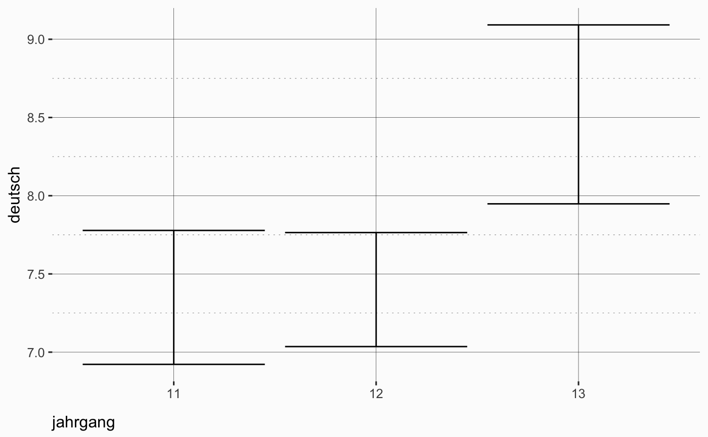

This toolbox has been compiled to make the intro to R and statistics with R a little easier.
Besides that, it also contains some neat helper functions for tasks or problems one might run in frequently in our field.
A neat overview of functions and stuff can be found on tadaatoolbox.tadaa-data.de
High Level Functions
There are several high level functions aimed at quick output generation:
- tadaa_aov
- tadaa_balance
- tadaa_chisq
- tadaa_int
- tadaa_kruskal
- tadaa_levene
- tadaa_mean_ci
- tadaa_nom
- tadaa_normtest
- tadaa_one_sample
- tadaa_ord
- tadaa_pairwise_gh
- tadaa_pairwise_t
- tadaa_pairwise_tukey
- tadaa_plot_tukey
- tadaa_t.test
- tadaa_wilcoxon
The point of these function is to combine routine steps into one function, so let’s showcase them.
t-Tests: tadaa_t.test
On of the first implemented functions, tadaa_t.test, automagically checks for homogenity of variance via car::leveneTest, and if the resulting p-value is below .1, homogenity of variance is assumed in the following call to stats::t.test. Afterwards the effect size \(d\) is is calculated with pooled/weighted variances to ensure accuracy, and the power of the test is calculated via the pwr package (also keeping in mind whether the test is paired or not). It then formats the output according to broom::tidy, sprinkles it with pixiedust and prints either to console, markdown or whatever printing method is passed via the print argument to pixiedust::sprinkle_print_method.
Table 1: Two Sample t-test with alternative hypothesis: \(\mu_1 \neq \mu_2\)
| Diff | \(\mu_1\) Männlich | \(\mu_2\) Weiblich | t | SE | df | \(CI_{95\%}\) | p | Cohen's d | Power |
|---|---|---|---|---|---|---|---|---|---|
| -0.05 | 33.62 | 33.66 | -0.11 | 0.44 | 248 | (-0.92 - 0.82) | .914 | -0.01 | 0.05 |
Or, if you’re having a non-parametric day, try this:
Table 2: Wilcoxon rank sum test with continuity correction with alternative hypothesis: \(M_1 \neq M_2\)
| Difference | \(M_1\) Männlich | \(M_2\) Weiblich | W | p |
|---|---|---|---|---|
| -1 | 33 | 34 | 7079.5 | .194 |
ANOVA: tadaa_aov
The function knows 3 types of sums of squares, adjustable via the type argument and defaulting to type 3 sums of squares. Additionally for type 3, the function also automatically checks the contrasts associated with the factor variables (only for unordered factors), and if check_names = TRUE, the contrasts are set to contr.sum.
Table 3: Two-Way ANOVA: Using Type III Sum of Squares
| Term | df | SS | MS | F | p | \(\eta_\text{part}^2\) | Cohen’s f | Power |
|---|---|---|---|---|---|---|---|---|
| geschl | 1 | 7.29 | 7.29 | 0.74 | .391 | 0 | 0.06 | 0.14 |
| jahrgang | 2 | 536.28 | 268.14 | 27.2 | < .001 | 0.18 | 0.47 | 1 |
| jahrgang:geschl | 2 | 96.06 | 48.03 | 4.87 | < .01 | 0.04 | 0.2 | 0.8 |
| Residuals | 244 | 2405.12 | 9.86 | |||||
| Total | 249 | 3044.75 | 333.32 |
Or, if you’re still unsure about the parametricity of your day:
Table 4: Kruskal-Wallis Rank Sum Test
| \(\chi^2\) | df | p |
|---|---|---|
| 20.89 | 2 | < .001 |
Pairwise tests
Pairwise t-tests
Since we found stats::pairwise.t.test insuffucient in cases of two-way ANOVAs, we wrapped the function to also enable the testing of interactions. The adjusted p-values are only adjusted within each term, so it is like performing stats::pairwise.t.test 3 times with each factor and additionally the interaction of the two factors (which is what the function does internally).
As a bonus, this functions knows the two additional p-adjustment methods sidak and sidakSD for the Sidak adjustement and the Sidak-like step-down procedure respectively.
| term | comparison | p (adj.) |
|---|---|---|
| jahrgang | 12 - 11 | > .99 |
| jahrgang | 13 - 11 | < .01 |
| jahrgang | 13 - 12 | < .01 |
tadaa_pairwise_t(ngo, response = deutsch, group1 = jahrgang, group2 = geschl, p.adjust = "sidakSD", print = "markdown")| term | comparison | p (adj.) |
|---|---|---|
| jahrgang | 12 - 11 | .86 |
| jahrgang | 13 - 11 | < .01 |
| jahrgang | 13 - 12 | < .01 |
| geschl | Weiblich - Männlich | < .001 |
| jahrgang:geschl | 12 & Männlich - 11 & Männlich | .287 |
| jahrgang:geschl | 13 & Männlich - 11 & Männlich | .121 |
| jahrgang:geschl | 11 & Weiblich - 11 & Männlich | < .001 |
| jahrgang:geschl | 12 & Weiblich - 11 & Männlich | .121 |
| jahrgang:geschl | 13 & Weiblich - 11 & Männlich | < .001 |
| jahrgang:geschl | 13 & Männlich - 12 & Männlich | .845 |
| jahrgang:geschl | 11 & Weiblich - 12 & Männlich | .189 |
| jahrgang:geschl | 12 & Weiblich - 12 & Männlich | .845 |
| jahrgang:geschl | 13 & Weiblich - 12 & Männlich | < .001 |
| jahrgang:geschl | 11 & Weiblich - 13 & Männlich | .845 |
| jahrgang:geschl | 12 & Weiblich - 13 & Männlich | .845 |
| jahrgang:geschl | 13 & Weiblich - 13 & Männlich | < .05 |
| jahrgang:geschl | 12 & Weiblich - 11 & Weiblich | .398 |
| jahrgang:geschl | 13 & Weiblich - 11 & Weiblich | .12 |
| jahrgang:geschl | 13 & Weiblich - 12 & Weiblich | < .01 |
Tests for normality: tadaa_normtest
Supported methods: - ad: Anderson-Darling - shapiro: Shapiro-Wilk - pearson: Pearson’s chi-square test - ks: Kolmogorov-Smirnov
library(dplyr)
print("test")
cols <- ngo[c("deutsch", "englisch", "mathe")]
tadaa_normtest(data = cols, method = "shapiro", print = "markdown")| variable | statistic | p.value | method |
|---|---|---|---|
| deutsch | 0.9792137 | 0.0010092 | Shapiro-Wilk normality test |
| englisch | 0.9752944 | 0.0002421 | Shapiro-Wilk normality test |
| mathe | 0.9746956 | 0.0001962 | Shapiro-Wilk normality test |
Statistics Wrappers
These are pretty self-explanatory. The goal is to provide simple functions for commonly used statistics that look and behave the same, and also only return a single numerical value to play nice with dplyr::summarize.
-
modus: A simple function to extract the mode of a frequency table. -
nom_chisqu: Simple wrapper forchisq.testthat produces a single value. -
nom_phi: Simple wrapper forvcd::assocstatsto extract phi. -
nom_v: Simple wrapper forvcd::assocstatsto extract Cramer’s V. -
nom_c: Simple wrapper forvcd::assocstatsto extract the contingency coefficient c. -
nom_lambda: Simple wrapper forryouready::nom.lambdato extract appropriate lambda. -
ord_gamma: Simple wrapper forryouready::ord.gamma. -
ord_somers_d: Simple wrapper forryouready::ord.somers.d.
General Helper Functions
Intervals and recoding
-
generate_recodes: To produce recode assignments forcar::recodefor evenly sequenced clusters. -
interval_labels: To produce labels for clusters created bycut. -
delete_na: Customizable way to dropNAobservations from a dataset. -
pval_string: Shamalessly adapted frompixiedust::pvalString, this will format a p-value as a character string in commonp < 0.001notation and so on. The difference from thepixiedustversion is that this function will also printp < 0.05.
Plotting helpers
-
mean_ci_t: Returns adata.framewithy(mean),yminandymaxfor the CI bounds.-
confint_t: For the underlying function to get the CI width. Returns a single value. -
confint_norm: Similar, but baes on normal distribution. Returns a single value.
-
-
mean_ci_sem: Standard error and CI, you guessed it, in one table.
library(ggplot2)
ggplot(data = ngo, aes(x = jahrgang, y = deutsch)) +
stat_summary(fun.data = "mean_ci_t", geom = "errorbar") +
theme_tadaa()
As a convenience, we added tadaa_mean_ci to quickly plot means with errorbars to get a quick glance at your data.

Data
The infamous ngo dataset is included for teaching purposes as well. It differs from ryouready’s provided version with regards to classes and labels. The code below was used to generate the provided version of the dataset:
(Note that \u00e4 is a unicode encoded Umlaut for compatibility reasons)
ngo <- ryouready::d.ngo
## sjPlot value labels
ngo$geschl <- sjmisc::set_labels(ngo$geschl, c("M\u00e4nnlich", "Weiblich"))
ngo$abschalt <- sjmisc::set_labels(ngo$abschalt, c("Ja", "Nein"))
ngo$jahrgang <- sjmisc::set_labels(ngo$jahrgang, c("11", "12", "13"))
ngo$hausauf <- sjmisc::set_labels(ngo$hausauf, c("gar nicht", "weniger als halbe Stunde",
"halbe Stunde bis Stunde", "1 bis 2 Stunden",
"2 bis 3 Stunden", "3 bis 4 Stunden",
"mehr als 4 Stunden"))
## factors
ngo$geschl <- factor(ngo$geschl, labels = c("M\u00e4nnlich", "Weiblich"))
ngo$jahrgang <- factor(ngo$jahrgang, labels = c("11", "12", "13"), ordered = TRUE)
ngo$hausauf <- car::recode(ngo$hausauf, "0 = NA")
ngo$abschalt <- car::recode(ngo$abschalt, "0 = NA")
ngo$abschalt <- factor(ngo$abschalt, labels = c("Ja", "Nein"))
## Variable labels
ngo$geschl <- sjmisc::set_label(ngo$geschl, "Geschlecht")
ngo$abschalt <- sjmisc::set_label(ngo$abschalt, "Abschalten")
ngo$jahrgang <- sjmisc::set_label(ngo$jahrgang, "Jahrgang")
ngo$hausauf <- sjmisc::set_label(ngo$hausauf, "Hausaufgaben")
## Saving
ngo <- dplyr::tbl_df(ngo)